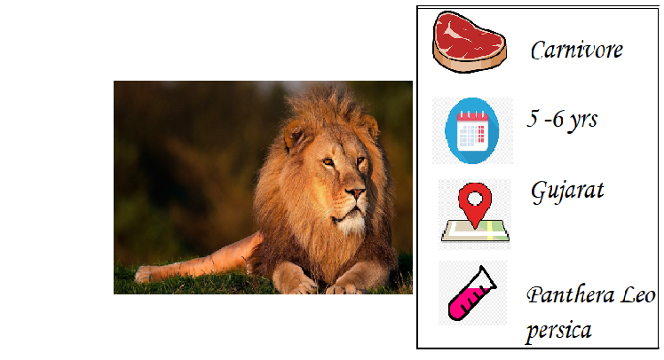
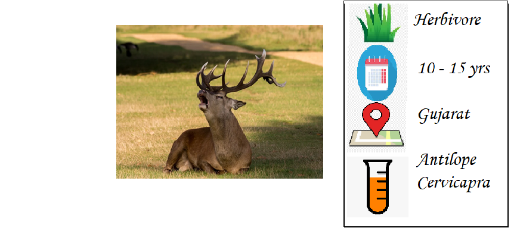

Endangered Forest Animals In India
BENGAL TIGER
The Bengal tigers are India’s most endangered species since many years. It is
threatened by poaching, loss, and fragmentation of habitat, and was estimated
at comprising fewer than 2,500 individuals .they currently are found in jungles
of West Bengal, Madhya Pradesh, Assam, Rajasthan, Orissa, Uttar Pradesh and
Tamil Nadu.And they have been protected under the national wildlife protection
act (1972)and many other initiatives taken by several organisations and government.
------------------------------------------------------------------------------------------------------------------------------------------

ASIATIC LION
The Asiatic lions are endangered animals that only live in the Gir national park in gujarat.
they have been endangered because of its small population size, area of occupancy and loss
of habitat, since the year 2000, and were protected under the national wildlife protection
act and several initiatives taken by the WWF. There are around 650 Asiatic lions left in Gir
national park now.
------------------------------------------------------------------------------------------------------------------------------------------
GREATER ONE HORNED RHINO
The animal can be found in India and Nepal, particularly in the foothills of the Himalaya
and in the state of assam. Poaching of horns is an important reason for the decline in the
number of the Indian Rhinoceros. they are mainly inhabitants of the kaziranga national park,
although few have been spotted in Kaziranga National Park, Dudhwa Tiger Reserve, Pobitora
Wildlife Sanctuary as well. They have been endangered since 1975 and only 600 were left then.
however with constant efforts from the Indian and Nepal government they have now around 3500
rhinos left.
------------------------------------------------------------------------------------------------------------------------------------------

BLACK BUCK
The black bucks found in Punjab, Rajasthan, Haryana, Gujrat are considered as sacred animals
and the poaching has been prohibited in india since 1972 .however yet they are extremely
vulnerable on the endangered lost in india. they are from the antelope family and feed on
grasses and tree leaves. They have become endangered due to illegal poaching, climate changes
and destruction of their habitat. black bucks were protected under the wildlife protection act
and there are 25000 black bucks left in india
------------------------------------------------------------------------------------------------------------------------------------------
NILGIRI TAHR
The nilgiri tahr is found in the nilgiri foothills in tamilnadu and kerala in the bandipur tiger
reserve and doddabetta peak. they feed on all the grasses and vegetables found there. they have
been endangered since 1970,protected under the national wildlife protection act in 1972 and there
are only around 3000 nilgiri tahrs left now.-
------------------------------------------------------------------------------------------------------------------------------------------